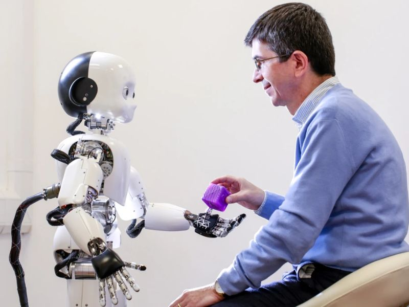

Team

Angelo Cangelosi
Principal Investigator
Samuele Vinanzi
Advisor

Leticia Berto
Postdoctoral Researcher
Cognitive Architecture for Social Perception and Engagement in Robots for ethical and transparent collaboration
Social robotics has made major advances in recent decades and is approaching real-world deployment, where humans and robots will collaborate as teammates in shared tasks. To function effectively in these environments, robots must be able to understand, interpret, and adapt to the social dynamics of human groups while acting in ways that are ethical, transparent, and trustworthy.
This project aims to develop socially aware and ethically grounded robots capable of seamlessly integrating into cooperative teams composed of both humans and other robots. The core contribution is the design of a cognitive architecture that enables social perception, intention understanding, and engagement in heterogeneous multi-agent systems. By equipping robots with advanced models of social cognition, the project supports transparent collaboration, shared goal understanding, and ethical decision-making in complex team settings.
The research focuses on heterogeneous multi-agent teams—systems involving at least three agents, including both humans and robots—working together toward a common goal. Through this work, the project seeks to enhance trust, accountability, and ethical value in human–robot collaboration, paving the way for reliable and socially responsible robotic teammates in future real-world applications.
Principal Investigator
Advisor
Postdoctoral Researcher
A human carries out the goal Lunch without expecting any assistance. Tiago++ observes the situation, infers the human’s goal, and reasons about which tasks it could potentially support based on its own skills. Despite this capability, the human completes all steps independently, as no collaboration is anticipated.
A human carries out the goal Drink without expecting any assistance. Tiago++ observes the situation, infers the human’s goal, and reasons about which tasks it could potentially support based on its own skills. Despite this capability, the human completes all steps independently, as no collaboration is anticipated.
A human carries out the goal Breakfast without expecting any assistance. Tiago++ observes the situation, infers the human’s goal, and reasons about which tasks it could potentially support based on its own skills. Despite this capability, the human completes all steps independently, as no collaboration is anticipated.
A human begins working toward the goal Lunch, expecting assistance. Tiago++ observes the scene, infers the human’s intention, and reasons about how it can contribute based on its own capabilities. The human completes part of the task and leaves the remaining steps to the robot, anticipating collaboration. Tiago++ waits until the human has finished their portion, remains ready to act, and clearly communicates which parts of the goal it will execute when it is time to assist.
A human begins working toward the goal Drink, expecting assistance. Tiago++ observes the scene, infers the human’s intention, and reasons about how it can contribute based on its own capabilities. The human completes part of the task and leaves the remaining steps to the robot, anticipating collaboration. Tiago++ waits until the human has finished their portion, remains ready to act, and clearly communicates which parts of the goal it will execute when it is time to assist.
A human begins working toward the goal Breakfast, expecting assistance. Tiago++ observes the scene, infers the human’s intention, and reasons about how it can contribute based on its own capabilities. The human completes part of the task and leaves the remaining steps to the robot, anticipating collaboration. Tiago++ waits until the human has finished their portion, remains ready to act, and clearly communicates which parts of the goal it will execute when it is time to assist.
Check out our project repository:
This material is based upon work supported by the Air Force Office of Scientific Research, Air Force Materiel Command, USA. Funder award no. FA8655-24-1-7047.